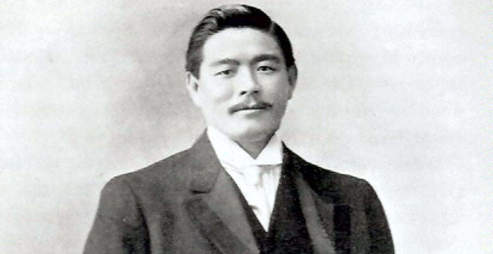
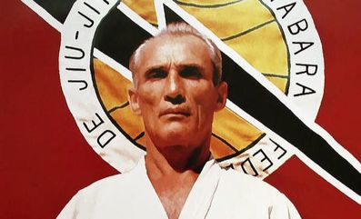

The beginnings
Brazilian jiu-jitsu grew from Japanese foundations — but “Brazilian” means more than geography; it reflects a whole philosophy. Japanese immigrants began arriving in Brazil in 1908, after the nation opened to Asian settlement in 1892. In the early 1900s, northern Brazil’s rubber-boom economy drew entertainers from around the world — including professional wrestlers and boxers.
Mitsuyo Maeda (1878–1941), a Japanese fighter, arrived in Brazil in November 1914. He had pursued sumo, but at 165 centimetres turned to Kodokan judo instead — then spent years fighting and teaching across the United States, England, Scotland, Belgium and Spain before settling in Brazil.
Around late 1916, a young Brazilian named Carlos Gracie (1902–1994) began studying under Maeda, then affiliated with the Circo Queirolo circus. The seed was planted.


The Gracies
In 1925, Carlos Gracie opened a jiu-jitsu academy in Rio de Janeiro, assisted by his younger brothers Oswaldo, George, Gastão Jr. and Hélio. Through the 1930s, Brazilian jiu-jitsu began transforming from a Japanese martial art into an international sport.
Early challenge matches put jiu-jitsu against every other style — and Hélio Gracie’s victories over boxers and wrestlers built the art’s reputation the hard way: by proving it.
The 1970s brought Brazilian emigration to North America — including Carley and Rorion Gracie, who opened schools in California. Rorion’s 1993 role in creating the Ultimate Fighting Championship put Brazilian jiu-jitsu in front of the world, spreading the art to Europe and Australia and drawing the interest of the U.S. military.
In 2001, that same art put down roots in Australia — ours.